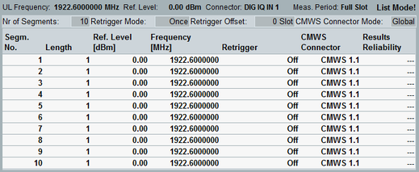

Multi-Evaluation List Mode: Settings View
Although the "Multi-Evaluation List Mode" can only be configured via remote commands (see "List Mode Configuration"), its segment setup can be displayed at the GUI via the softkey/hotkey combination "Display > Select View ... > TX Measurement (Scalar)."

Multi-evaluation list mode settings